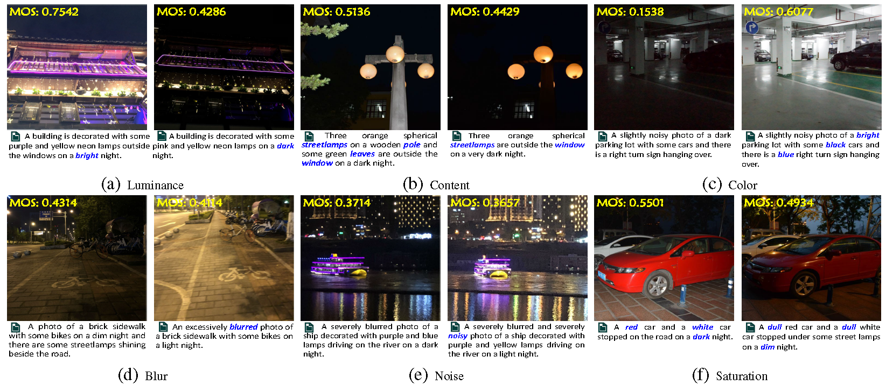
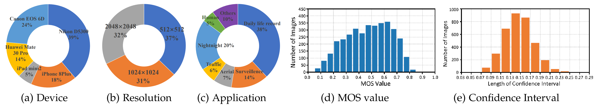
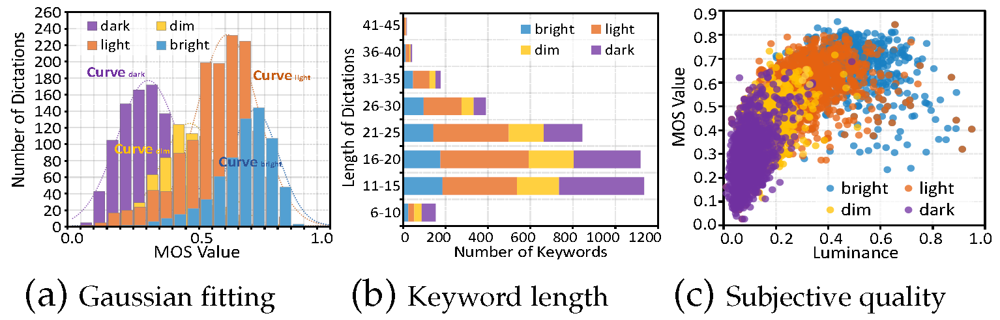

Blind image quality assessment (BIQA) aims at automatically and accurately forecasting objective scores for visual signals, which has been widely used to monitor product and service quality in low-light applications, covering smartphone photography, video surveillance, autonomous driving, etc. Recent developments in this field are dominated by unimodal solutions inconsistent with human subjective rating patterns, where human visual perception is simultaneously reflected by multiple sensory information. In this article, we present a unique blind multimodal quality assessment (BMQA) of low-light images from subjective evaluation to objective score. To investigate the multimodal mechanism, we first establish a multimodal low-light image quality (MLIQ) database with authentic low-light distortions, containing image-text modality pairs. Further, we specially design the key modules of BMQA, considering multimodal quality representation, latent feature alignment and fusion, and hybrid self-supervised and supervised learning. Extensive experiments show that our BMQA yields state-of-the-art accuracy on the proposed MLIQ benchmark database. In particular, we also build an independent single-image modality Dark-4K database, which is used to verify its applicability and generalization performance in mainstream unimodal applications. Qualitative and quantitative results on Dark-4K show that BMQA achieves superior performance to existing BIQA approaches as long as a pre-trained model is provided to generate text description. The proposed framework and two databases as well as the collected BIQA methods and evaluation metrics are made publicly available on https://charwill.github.io/bmqa.html.
Storage, transmission, and processing of low-light images are unavoidable [22], especially in smartphone photography, video surveillance, autonomous driving, etc. However, imaging in weak-illumination environments can lead to uneven brightness, poor visibility, impaired color, and increased hybrid noise, which degrade user experience and product value [47]. Further, low-light images also pose various challenges to the performance of mainstream vision algorithms, including object detection [8], recognition [55], classification [30], tracking [59], assessment [49], segmentation [9], and enhancement [67]. Therefore, it is essential to develop a reliable objective quality indicator for low-light images, which helps to meet the quality measurement and inspection needs in various industrial products and computer vision tasks.
Low-light blind image quality assessment (BIQA) aims to automatically and accurately estimate objective scores, thereby avoiding the obstacles of subjective experiments such as time-consuming, unstable, and non-automated processes. This is particularly important for quality monitoring in industrial products [47]. At the same time, the human visual system (HVS) is the ultimate receiver of visual signals in the BIQA task [64], and human visual perception is simultaneously reflected by multiple sensory information. However, existing BIQA methods, whether hand-crafted or deep-learned, rarely consider multimodal information [34] and are limited to lowlight images alone. As a result, how to utilize multimodal learning to more accurately perform the quality assessment of low-light images is the most fundamental motivation behind this work.
The perception of image quality is a complex and subjective process that involves evaluating and interpreting visual stimuli. When scoring the quality of visual signals, humans can perceive multiple sensing information at the same time [1], [36]. After acquired exercise, our brains can easily make connections between different modality data and further create a comprehensive representation of the characteristics of things [39]. For example, when the image modality is influenced by various low-light noises, other auxiliary modalities are expected to provide supplementary quality description clues, such as the text description of image content or semantic visual understanding [45]. Consequently, multimodal BIQA aims to create a visual indicator that mimics the HVS and learns better quality descriptors that represent human visual perception.
Inspired by the above discussion, we propose an early multimodal BIQA paradigm for low-light images. Considering that there is no low-light BIQA database equipped with multimodal information, we have constructed the first Multimodal Low-light Image Quality (MLIQ) database. In the image modality, low-light images contain authentic distortions from the steps of image acquisition and processing [47]. In the text modality, we have specified quality-aware principles for generating semantic descriptions of image quality, which are based on the fact that humans are better at describing quality cognition rather than giving a quantitative value [58]. Thus, text-based quality semantic description (QSD) can provide supplementary information in the modeling of BIQA.
Further, we have developed a unique Blind Multimodal Quality Assessment (BMQA) method to integrate image and text features. The integration of cross-modal information helps maintain the representation depth of objective visual signals while broadening the breadth of human visual perception, which can introduce new benefits for the learning of image quality descriptors. The expansion of data modality helps a deep-learned model to enrich low-level embedding features from different perspectives, thereby improving the robustness of the forecasting performance [1]. Extensive experiments validate the effectiveness of the proposed BMQA, demonstrating the great potential of multimodal learning in blind quality assessment modeling.
The main contributions are four-folds:
• Inspired by the HVS, we propose to apply multimodal learning to the BIQA problem by integrating visual and text features. To the best of our survey, this is one of the first attempts to explicitly explore low-light quality assessment across different modalities.
• To verify the feasibility of multimodality in the BIQA task, we first construct a new MLIQ database of lowlight images, which contains 3600 image-text data pairs. In addition, we carry out a statistical analysis of the text feature, which is helpful to demonstrate human quality cognition.
• Based on the MLIQ database, we further investigate three main modules in multimodal learning: image-text quality representations, latent feature alignment, and fusion prediction. To improve the efficiency of deep model training, we develop an effective BMQA method by incorporating both multimodal self-supervision and supervision.
• To demonstrate the applicability of our BMQA, we also establish a new low-light image quality database, namely Dark-4K, which contains only a single image modality. Dark-4K is used to verify the applicability and generalization performance under the unimodal assessment scenarios. Experiments show that this hybrid learning paradigm ensures that BMQA achieves state-of-the-art performance on both the MLIQ and Dark-4K databases.
The established database contains RGB images with the subjective quality scores and text sequences with the quality semantic description (QSD) as shown in Fig. 2.
2.1 Multi-modality Construction.
2.1.1 Image Modality
MLIQ consists of a total of 3600 low-light image samples which 1360 low-light images are captured by two new devices, Canon EOS 6D and Huawei Mate 30 Pro and 2240 low-light images are from NNID. These low-light samples are captured in real-world environments (e.g., indoors and outdoors) with a total of five different mobile devices. One device captures a visual scene with five different settings. These five settings are allowed to be different for different scenarios. The resolution of each low-light sample ranges from 512×512 to 2048×2048. Therefore, MLIQ is the largest no-reference low-light database, covering various scenes, large volume, complex noise, diverse devices, and authentic distortion. We take a single stimulus to obtain the MOS label for each low-light image on MLIQ.
A statistical analysis of our MLIQ is illustrated in Fig. 3. Fig. 3 (d) reports the histogram distribution of the MOS value. As seen, MOS values span the entire quantified range of visual quality with sufficient and fairly uniform samples at each level. This shows that our MLIQ database covers the entire range of visual quality (from poor to excellent), and also exhibits a good separation of the perceptual quality. Fig. 3 (e) reports the 95% confidence intervals obtained from the mean and standard deviation of the rating score for each image as the consistency evaluation, where the confidence interval is mainly distributed between 0.10 and 0.18. It indicates that all observers have reached a high agreement on the perceptual quality of low-light images. Therefore, the proposed MLIQ database can be used as a ground-truth for the performance evaluation of objective quality indicators.
2.1.2 Text Modality.
By synthesizing some previous work, we design two QSD principles based on the perception mechanism of the HVS. It can exhibit feed-forward visual information extraction and aggregation from the retina (i.e., intuitive visual perception) to the primary visual cortex (i.e., empirical visual perception). These principles are used to guide annotators in generating their verbal descriptions.
Intuitive Visual Perception: This principle is inspired by previous physiological and psychological experiments on HVS, including saliency detection and just noticeable difference. It is closely related to early vision and focuses on the relationship between optical stimuli from visual observation and the HVS experience. Intuitive vision mainly focuses on some basic data characteristics, covering overall brightness, color status, texture, salient objects, etc. For instance, the verbal description in Fig. 2 (c) contains the QSD features, such as the luminance information 'bright', the color information 'green' and 'pink', and the observed object information 'tree' and 'path'.
Empirical Visual Perception: This principle is inspired by modern theoretical studies in visual theory that embraces empiricism as the dominant paradigm of human perception construction, such as Gregory's theory. These studies demonstrate that while part of what we perceive comes from objects in front of us, another part (and possibly a larger part) always comes from our brains. The empiricism principle is closely related to late vision and focuses on exploring how the viewpoints of observers are involved in the visual perception experience. Empirical vision mainly involves some common real-world knowledge as well as empirical visual understanding, and highlights the possible real-life scenarios of low-light observations. For instance, subjects use 'driving' rather than 'sitting for 'ship' as shown in Fig. 2 (e).
However, there are several challenges associated with verbal description. In this article, we will consider three of them in obtaining the text labels:
• Subjectivity. Verbal description of image quality perception is hindered by inherent subjectivity in individual preferences, making it difficult to establish a standardized and universally applicable vocabulary for describing image quality.
• Variability. Verbal descriptions exhibit significant variability. Individuals perceive and interpret the same test image differently based on personal experiences, cultural backgrounds, aesthetic preferences, and physiological structures. In other words, visual appeal may vary among individuals.
• Expressiveness. Human language has limited capacity to express visual attributes and qualities. Describing with words often falls short in capturing the richness and complexity of image content. For instance, it can be challenging to articulate subtle differences in color tones, texture, or lighting conditions accurately.
To address the above three challenges, we attempt to develop a tractable verbally description paradigm. The quality-based sentence should include a set of perceptual attributes such as color accuracy, noise, sharpness, and overall image quality. In the experiments, each subject is asked to provide a meaningful and concise verbal description for one low-light image. For the dictation of each image content, the following requirements need to be met:
• For images with salient objects (e.g., the ship in Fig. 4 (e)), trying to describe all important objects in the image content. For images with salient scenes (e.g., the hallway scene in Fig. 4 (c)), trying to describe the overall environment. For images without any salient content (e.g., the building with many small objects in Fig. 4 (a)), trying to describe attractive content part, including objects and scenes.
• Trying to describe the overall brightness by using the relevant QSD features, such as 'bright', 'light', 'dim', or 'dark'.
• Trying to describe the main attributes of each object, such as color, brightness, texture (e.g., 'wooden' pole in Fig. 4 (b), 'stone' path in Fig. 4 (c), and 'brick' sidewalk in Fig. 4 (d)), etc.
• Trying to describe the visual perception experience by using the relevant QSD features, such as 'colorful', 'vivid', 'blurred', 'noisy', etc.
2.2 Dataset Analysis.
We analyze correlations between images, texts, and quality scores (i.e., MOS) on the MLIQ database. Specifically, the image modality represents a visual stimulus, and the corresponding text modality represents a subjective cognition and understanding of the image modality. Based on the statistical analysis of MLIQ, we attempt to capture the underlying connection between visual signals and verbal descriptions. We conduct the statistical analysis based on brightness, content, color, and then discuss other factors affecting quality perception on low-light images. The established database contains RGB images with the subjective quality scores and text sequences with the quality semantic description (QSD) as shown in Fig. 2.
2.2.1. Luminance.
The quality level of low-light images is sensitively dependent on visual brightness perception. The text modality contains quality clues (i.e., keywords) that describe the luminance status, which can effectively provide supplementary information. Therefore, we calculate the histogram of the luminance QSD feature on the entire database, as shown in Fig. 4. The above observations suggest that the luminance QSD features in the text have a strong relationship with the image quality.
We start by figuring out how text data describes the image quality from the view of brightness. The text sequence contain luminance QSD features, covering 'dark', 'dim', 'light', and 'bright', which represent the illumination condition. We calculate the histogram of the luminance QSD feature on the entire database, as shown in Fig. 4. As seen, the MOS value corresponding to 'dark', 'dim', 'light', and 'bright' is concentrated around 0.2 to 0.4, 0.4 to 0.5, 0.5 to 0.6, and 0.6 to 0.8, respectively . Intuitively , the histogram of each luminance QSD feature should obey an independent Gaussian distribution. Therefore, we adopt a Gaussian function to fit the histogram of 'dark', 'dim', 'light', and 'bright', and the Gaussian centers are 0.2758, 0.4283, 0.5714, and 0.6737, respectively. The above observations suggest that the luminance QSD features in the text have a strong relationship with the image quality.
Next, we analyze the relationship between image, text, and quality score based on the brightness. We report the stacked histogram of the length of verbal at various luminance conditions in Fig. 4 (a). As seen, 'dim' and 'dark' represent low luminance, which tend to have shorter verbal lengths. This is consistent with our experience that people often have difficulty describing very dark scenes with a long verbal description.
In addition, we calculate the average luminance value for each image as the objective luminance level and report the scatter plot of the corresponding quality score as shown in Fig. 4 (b). We further mark colors for each plot based on the luminance keyword contained in corresponding text sequence, as the subjective luminance level. It can be observed that as the luminance level increases, the quality score generally increases as shown in different scatter colors in Fig. 4 (b). It suggests that the luminance QSD feature is an efficient representation of visual quality perception.

2.2.2 Content.
Due to insufficient exposure, low-light distortions usually result in incomplete or unclear visual quality, further leading to annoying visual experience. The text modality contains verbal descriptions of observed objects, which can effectively provide auxiliary information on which objects the visual attention is focused on. Therefore, we explore the relationship between image quality and content.
The reduction of observed objects is often reflected in the reduction of object descriptions in the text, as shown in Fig.2 (b). Based on this observation, we count the quantity of observed objects contained in each text sequence and report the corresponding MOS values. Fig.5 (a) consists of stacked column charts and scatter plots, covering the number of observed objects ranging from 1 to 5. For each number of observed objects, the stacked column chart reports the image number at each luminance level, including 'dark', 'dim', 'light', and 'bright', respectively.
Based on the statistical data of image content, we can draw some interesting conclusions:
• The curve in Fig.5 (a) shows that the quality score tends to be higher as the quantity of observed objects increases. This may indicate that images with better visual quality usually contain more identifiable observed objects.
• The stacked histogram in Fig.5 (a) shows that when the luminance levels get lower, the number of observed object decreases.
• The quality score increases caused by the quantity increase of observed objects is small (0.0657 from 1 to 5), which indicates that it is difficult to sensitively reflect the quality experience via the quantity of observed objects. One possible reason may be that low-light distortion tends to lose detail rather than salient objects, while the quality score depends more on the salient content itself.
2.2.3 Color.
Low-light distortion tends to exhibit low color contrast and low saturation. The text modality contains verbal descriptions of the observed colors, which may effectively provide useful QSD information on visual perception responses. Therefore, we investigate the relationship between image quality and observed colors.
The impairment of observed colors is reflected as the reduction of color descriptions in the text sequence, as shown in Fig.2 (c). Inspired by this, we count the number of color QSD features contained in each text sequence and report the corresponding MOS values. Fig.5 (b) consists of stacked column charts and scatter plots, covering the number of color words ranging from 0 to 4. For each number of color QSD features, the stacked column chart reports the image quantity at each luminance level, including 'dark', 'dim', 'light' and 'bright', respectively.
Based on the statistical data of image color, we can also draw some interesting conclusions:
• The curve in Fig.5 (b) shows that the quality score tends to be higher as the number of color QSD features increases. This may indicate that images with a better visual perception experience usually contain more recognizable colors, as shown in Fig.2 (c).
• The stacked histogram in Fig.5 (b) shows that when the visual perceptual luminance gets lower, the number of observed color tends to be lower.
• The quality score increases caused by the number increase of observed color is large (0.2747 from 0 to 4). This may indicate that the quantity of observed color can sensitively represent the quality experience of low-light distortion.
2.2.4 Other factors.
Low-light photography is also often affected by many other factors, including blurring, heavy noise and low saturation. A low-light image may get blurred by the camera shake if it is set to a long exposure time, as shown in Fig.2 (d). The increase in light sensibility reduces the signal-to-noise ratio while increasing the exposure, as shown in Fig.2 (e). In addition, both underexposure and overexposure significantly affect the color saturation, which further affect the visual experience, as shown in Fig.2 (f).
Considering that the auditory QSD information may contain some keywords that directly describe these degradation features, we collect the text description that contain distortion-based keywords and report the corresponding MOS values. Fig.5 (c) shows stacked column charts and scatter plots, covering the distortion-related keywords of 'blur', 'noisy', 'dull', and 'vivid'.
Based on the above statistical data, we can draw some interesting conclusions:
• QSD features such as 'blur', 'noisy', and 'dull' represent poor visual experience, while 'vivid' represents good visual experience.
• The proportion of 'noisy' is large in the 'bright' luminance level, which indicates that noises in low-light images are more easily perceptible.
• The proportion of 'blur' is similar under different luminance levels, which indicates that blur is not closely related to lumination.
• The proportion of 'dull' is large in the 'dark' and 'dim' luminance level, while the proportion of 'vivid' is large in the 'light' and 'bright' luminance level. These observations are consistent with the fact that human eyes prefer highly saturated colors, as shown in Fig.2 (f).
To validate the cross-dataset performance, we further establish a new ultra-high-definition (UHD) lowlight database for the cross-dataset validation, namely Dark-4K. The original images of Dark-4K. Dark-4K consists of 424 raw low-light images, which is captured by two consumer electronics: Sony α7S-II and Fujifilm X-T2. These two cameras have different imaging hardware: Sony has a full-frame Bayer sensor, and the Fujifilm camera has an APS-C X-Trans sensor. Dark-4K supports the quality assessment of low-light images produced by different filter arrays.
The subjective experiments on Dark-4K maintain the same settings of the MLIQ. The histogram of labeled MOS results and the 95% confidence intervals for the subjective ratings are shown as Fig.6 (a) and Fig.6 (b), respectively.
Based on the proposed MLIQ database, we design a unique deep-learned BMQA method as shown in Fig.7. We address the main challenges of multimodality in the BIQA task, including feature representation, alignment, and fusion.

• Multimodal quality representation refers to extracting and integrating effective features that take the advantage of the supplementary or shared quality description clues between visual and auditory data. In this part, we select 3 representative networks as the backbone of text feature extractor including Bag-of-Word (denoted as BoW), recurrent neural network (denoted as RNN), and Transformer (denoted as TransF), and 5 representative networks as the backbone of image feature extractor, including VGG, ResNet (denoted as as RN), EfficientNet (denoted as as EN), Vision-in-Transformer (denoted as as ViT), and ConvNeXT (denoted as as CNXT).
• Multimodal quality alignment refers to finding the corresponding quality representation relationship between the image and text modalities. In this part, we adopt the cosine similarity to measure the relative difference between image and text modalities, and design an attentive pooling for multimodal quality alignment.
• Multimodal quality fusion takes the benefit of both visual and auditory modalities is that the image quality can be described from different perspectives. To preserve quality information as much as possible, we integrate visual and auditory features via a concatenation operation. Next, we employ a linear probe to fuse and forecast a final quality score.
In this section, extensive experiments are conducted on two latest benchmark low-light image databases. Specifically , we verify the effectiveness of our BMQA on the image-text database MLIQ (i.e., BMQAimage-text) and the image-only database Dark-4K (i.e., BMQAimage-only), respectively. Besides, we demonstrate the comparison results with 25 competitive methods, including 8 hand-crafted BIQAs and 17 deep-learned BIQAs. We provide the detailed descriptions of the experimental validation, analysis, and discussion as follows.
5.1. Feature Representation Validation.
To verify the effectiveness of visual and auditory feature extractors, we have conducted the experiments on several representative Faud and Fimg models.Table 1 provides the overall comparison results of 15 Faud and Fimg combinations. As seen in Table 1, all 15 BMQA variants achieve promising performance, which verify the excellent robustness capability of our multimodal paradigm.
Table 1: Overall performance comparison between 15 Fimg and Faud combinations on the MLIQ database.In addition, considering that image is the main modality in the BIQA task, we further explore the impact of different network variants of Fimg. Fig.8 provides the PLCC and SRCC curves of five Fimg models.This result suggests that our BMQA framework can maintain excellent performance for lightweight models.
5.2. Overall Performance Comparison.
From Table 2, it is observed that the average prediction accuracy of three BMQAs significantly outperforms the other 25 competitive BIQA methods.. The best result obtains a PLCC score of 0.9121, a SRCC score of 0.9065, and a RMSE score of 0.0802, which is very promising in the BIQA task with authentic distortions.Furthermore, the experimental results also show that there is no significant performance difference for our BMQA from Device-I to Device-V, and the entire database, suggesting that different shooting devices have a slight side-effect in multimodal learning.
Table 2. Performance comparison of the proposed BMQA method and 25 state-of-the-art BIQAs on the MLIQ database.5.3. Cross-dataset Validation on Image-only Case.
We have validated the effectiveness of our BMQAimage-text in terms of feature representation and overall performance. Nevertheless, the proposed BMQA has to face the challenge due to the absent of the text modality. Frankly speaking, it is impractical to require quality related text descriptions for every low-light image. In other words, the question is how to use our BMQA when the text modality is absent. To address this challenge, we further propose a feasible scheme and validate it on another independent low-light database, Dark-4K, which contains only paired image samples and their MOS labels.
Considering that the QSD information in a text sequence can be mainly represented by the related text information in the BIQA task, we believe that Faud2txt can also be replaced by a recent image caption model: 'show and tell' (SAT). Therefore, when the text modality is unavailable, BMQA employs an image captioning model to generate the feature representation of Faud2txt. To the best of our survey, few existing image captioning models are specially trained for the BIQA task, and hence the generated text information is less relevant to the visual quality experience, which may not meet the QSD principles. Therefore, we train a special QSD-based captioning model Fimg2txt based on the MLIQ database.
Table 4 provides the overall comparison results of all 17 deep-learned BIQAs in terms of PLCC, SRCC, and RMSE. As seen, our BMQAs achieve the state-of-theart performance on the cross-dataset validation. The best BMQAimage-only CNXT-B+T ransF obtains a PLCC score of 0.9156, a SRCC score of 0.9085, and a RMSE score of 0.0605. Experimental results verify the applicability and generalization performance of our BMQA framework.
Table 3. Performance comparison of the proposed BMQA and 17 deep-learned BIQAs on the Dark-4K database.